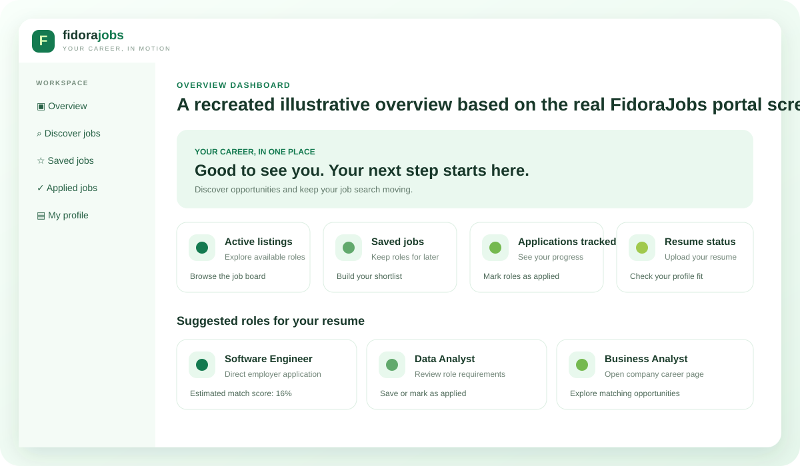
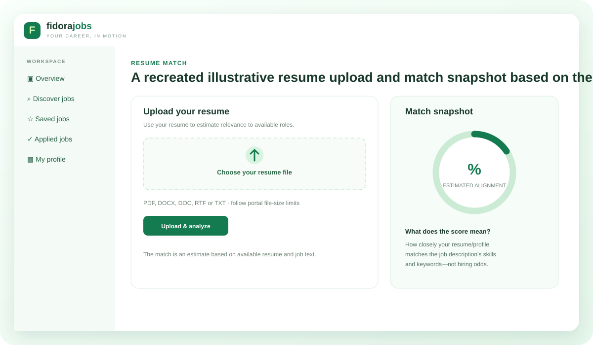
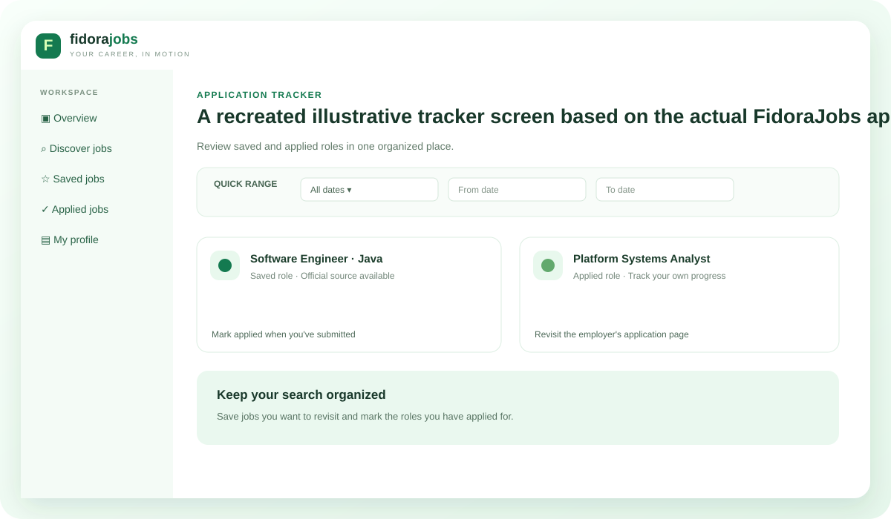

01 / OVERVIEWYour job search at a glance
See available listings, saved jobs, application activity and suggested roles.

02 / DISCOVER JOBSSearch in one place. Apply on the company website.
Filter by keyword, country, state, city, job domain and posting date. Recent 24-hour postings depend on verified date data.

03 / RESUME MATCH SCOREUnderstand how closely a role matches your profile
The score is an estimated percentage of alignment between your resume/profile and the job description's available skills and keywords. It is not a hiring probability or a promise of selection.

04 / APPLICATION TRACKERKeep saved and applied roles organized
Save roles to revisit and mark jobs as applied so your search stays organized.
HELP WHEN YOU NEED IT
24/7 help and support
For portal or account questions, contact support@fidorapath.in.
View lifetime plans →